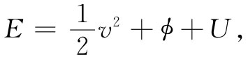
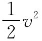
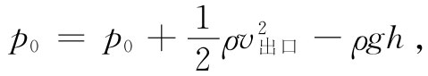
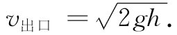
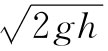

现在要回到运动方程式（40.8）上来，但将限于讨论“定常”流动的情况。所谓定常流动我们指的是，在流体中任何地方的速度永远不会发生变化的流动。在任何地点的液体，总是被新的流体以完全相同的方式所代替。速度图看起来总是相同的——v是一个静止的矢量场。用我们在静磁学中画出“场线”一样的方法，现在也可以把那些始终与流体速度相切的线画出来，如图40-5所示。这些线称为流线 。对于定常流来说，它们显然就是流体微粒的实际路径（在非定常流中，这个流线图样会随时改变，因而在任何时刻的流线图样就并不代表流体微粒的路径）。
图40-5 流体定常流动中的流线
定常流并不意味没有什么情况发生，流体中的原子正在运动和改变其速度。它仅仅意味着∂v/∂t=0。因此，若我们以v点乘该运动方程，则项v·（Ω×v）就会消失，而仅留下
上述方程表明，对于沿流体速度方向的一个小位移 来说，括号内的量不会改变。这时，在定常流中的所有位移都沿着流线，因而式（40.12）告诉我们：对于沿流线的所有点 ，我们能够写出
这就是伯努利定理 。一般来说，右边那个常数，对于不同流线可以有所不同，尽我们所知就是：式（40.13）左边沿一给定流线 是完全相同的。顺便说说，我们不妨注意，对于Ω=0的那种定常无旋 运动，运动方程式（40.8）会向我们提供下面的关系
除了现在 该常数对于整个流体都具有相同值 之外，该式与式（40.13）完全相同。
图40-6 流体在流管里的运动
事实上，伯努利定理只不过是关于能量守恒的一种表述。像这样的一个守恒定理会提供关于流动的大量信息，而不必实际去解那些详尽的方程。伯努利定理竟是那么重要而又那么简单，使得我们愿意向你们表明，如何才能用一种与刚才所用的正规运算不同的方式将其推导出来。设想如图40-6所示的、由一束相邻流线所形成的一个流管。由于这个管的壁是由流线构成的，所以就不会有流体穿越管壁流出来。让我们把这个流管一端的截面叫作A1 ，那里的流速为v1 ，密度为ρ1 ，而势能为ϕ1 。在管的另一端，这些对应的量则分别为A2 ，v2 ，ρ2 和ϕ2 。现在，在经历了一个短短的时间间隔Δt之后，在A1 处的流体已经移动一小段距离v1 Δt，而在A2 处的流体则移动另一段距离v2 Δt［图40-6（b）］。质量 守恒要求凡通过A1 而进入的质量必须等于通过A2 而离开的质量。在管两端这两质量必定相同：
ΔM=ρ1 A1 v1 Δt=ρ2 A2 v2 Δt.
因此，就有等式
ρ1 A1 v1 =ρ2 A2 v2 . （40.15）
这个方程告诉我们：若ρ是一恒量，则速度与流管的截面积成反比。
现在要来计算由流体压强所做的功。对A1 处进入的流体所做的功为p1 A1 v1 Δt，而在A2 处流体对外所做的功则为p2 A2 v2 Δt。因此，对A1 与A2 之间流体所做净功为
p1 A1 v1 Δt-p2 A2 v2 Δt，
它必定等于质量为ΔM的流体在从A1 至A2 的运动过程中能量的增加，换句话说，
p1 A1 v1 Δt-p2 A2 v2 Δt=ΔM（E2 -E1 ）， （40.16）
其中E1 为在A1 处单位质量的流体能量，而E2 则为在A2 处单位质量的能量。流体的单位质量能量可以写成

其中 为单位质量的动能，ϕ为单位质量的势能，而U则代表流体单位质量的内能的一个附加项。例如，内能也许相当于可压缩流体中的热能或化学能。所有这些量都可以逐点变化。把这种能量的形式应用到式（40.16）中，则有
但我们已经知道ΔM=ρAvΔt，所以得到
这是带有内能附加项的伯努利方程。若流体是不可压缩的，则该内能项在两边相等，而我们再一次得到：方程式（40.14）沿任何流线成立。
图40-7 从水桶喷出的水流
现在考虑某些简单例子，其中伯努利积分给我们提供了对流动的描述。假设有水从靠近桶底的一个小孔流出来，如图40-7所示。我们考虑这种情况，即其中小孔处的流速v出口 比靠近桶顶处的流速要大得多，换句话说，设想桶的直径大到我们可略去液面的下落（只要愿意我们可以做更精确的计算）。在桶顶处压强为p0 ，即大气压，而在出口旁的压强也是p0 。现在就对诸如图上所画出来的那条流线写出伯努利方程。在桶顶，我们取v等于零，同时也取重力势ϕ为零。在出口处速率为v出口 ，而ϕ=-gh，因而

也即
 （40.18）
这一速度恰好就是某一物体下落了距离h应该得到的速度。这不会太令人惊异，因为水在出口处获得的动能是以在桶顶的势能作为代价的。然而，一定不要由此得出这样的概念，即可以用这一速度乘该小孔面积而算出流体从该桶流出的流量。流体喷离小孔时，其速度并非完全互相平行，而是带有向内朝着流线中心的分量——水流在收缩。在经过了一小段路程后，这水流的收缩便停止，而速度的确变成平行。因此，总流量乃是速度乘以该点所在处 的面积。事实上，若我们有一个排水口恰好是圆形而有锐利边缘的小孔，则水流将缩小至小孔面积的62%。对于不同形状的排水管，这缩小后的有效排水面积是不相同的，而实验上的收缩率可以从射流系数 表查得。
图40-8 若用一条凹入式排水管，则水流将缩小至出口面积的一半
如果排水管属于凹入式的，如图40-8所示，则人们可用最漂亮的方式证明这射流系数恰为50%。下面将仅仅给出如何做这一证明的一点提示。我们已用能量守恒获得了速度，即式（40.18），但动量守恒也值得加以考虑。既然在排出水流中有动量流出，就一定有一个力作用于排水管的横截面上。这力是从哪里来的呢？力必须来自桶壁上的压强。只要该射流孔细小并远离桶壁，则靠近桶壁的流体速度将很小。因此，作用于每个面上的压强就与在静止流体中的静压强——从式（40.14）中得出的——几乎完全一样。于是，在桶的侧壁上任一点处的静压强就必定与对面壁上一点处的相等压强相对应，除了 排出管对面壁上的那些点以外。如果我们算出由这一压强所引起的通过出口而流出的动量，则就能够证明射流系数为1/2。然而，对于像图40-7所示的那种排水孔我们就不能应用这一方法，因为沿桶壁一直到接近排水孔的区域速度增大所产生的压强降，是我们无法算出的。
图40-9 在速度最大处压强最低
让我们来看另一例子——一根截面变化的水平管，如图40-9所示，水从一端流入，而由另一端流出。能量守恒、亦即伯努利公式表明：在速度较高的那个颈缩区压强比较低。我们可以通过下述办法轻易地演示这一效应，即利用在流管的不同截面处接上一些竖直的小口径管子——小到不会影响流动——来量度各处的压强。这时，压强是由这些竖直管中的水柱高度来量度的。在颈缩处所求得的压强小于两侧的压强。如果在经过颈缩区之后，面积又恢复到颈缩区前相同的值，则压强又会再升高。伯努利公式会预言，在颈缩区下游的压强应与上游的一样，但实际上显著地较低。我们的预言所以有误，是由于忽略了那些摩擦、黏滞力之故，这些力会引起压强沿着管道下降。尽管存在这种压强降，但在颈缩处的压强（由于增大了的速率）仍明显地低于其两侧的压强——正如伯努利所预言的那样，速率v2 肯定应当超过v1 才能使相同的水量流经较窄的管道。因此，水在从宽处流经窄的部分时是被加速的。产生这一加速度的力则来自压强降。
还可用另一个简单的演示来核对我们的结果。假设有一个接于桶旁而会向上喷射的排水管，如图40-10所示。要是射流速度恰好等于 ，则这排出的水就应当上升至与桶内水面相平的高度。实验表明，它稍微低了一点。我们的预言大致正确，但在能量守恒公式中那还未被包括进去的黏滞阻力又一次引起了能量损耗。
图40-10 v不等于 的证明
你有没有拿着两张互相靠近的纸片而试图把它们吹开？试试看。它们会互相 靠紧。当然，原因是，空气流经两张纸片中间狭窄的空间时，比起流经外面来具有较高速率。两纸片之间的压强比大气压低 ，因而它们就互相靠近而不是互相离开。